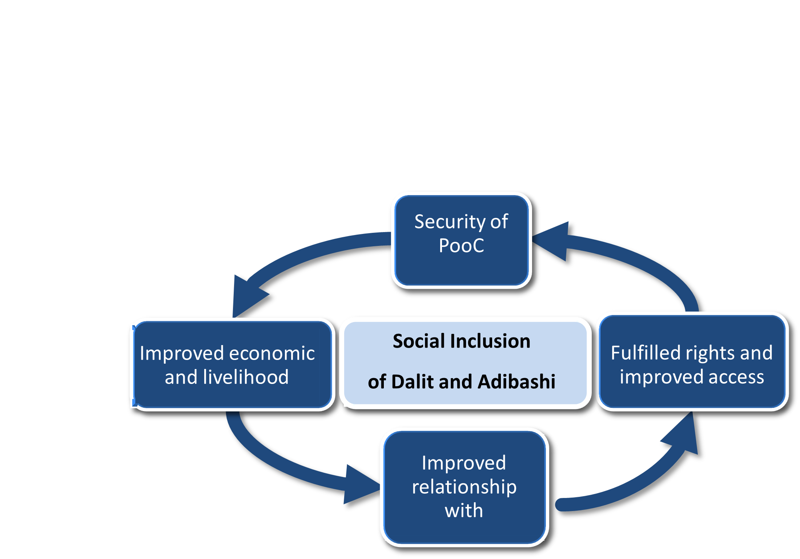

Strategies:
- Development of leadership, CBOs and institutional capacity for claiming rights and entitlements
- Promotion of education, health and sanitation.
- Promotion of livelihoods and economic status.
- Extension and transformation of information and technology.
- To ensure the child's survival, safety, development and participation rights.
- Sustainable agriculture, food security and resource management.
Implemented programs:
- Access to services, rights and entitlements of Government and non-government institutions.
- Agriculture and food security assistance.
- Inclusive market development of Agriculture and Non-agriculture products (bull fattening and native chickens, vermi compost).
- Promotion of public health and sanitation.
- Climate change adaptation and disaster risk reduction.
- Housing
- Blood Donation.
- Combat And Control of Alcohol.
- Micro finance for sustainable development.
Targeted Population:
| Household |
Population |
Male |
Female |
| 15800 |
71165 |
37030 |
34135 |
Program Approach:
- Democratic.
- Human Rights Based.
- Partnership and Networking.
- Systemic Change.
- Inclusive Market Development.
- Diapraxis.
Cross Cutting Issue:
- Gender.
- Resilience building.
- Conflict management.
Development Theory of Change:

Organizational standards and procedures:
ARCO has established a formal oversight mechanism, supported by approved policies and manuals, to govern and manage the organization and its development programs. These frameworks provide clearly defined internal procedures and mechanisms for addressing legal affairs.
- Human Resource Policy.
- Financial Policy.
- Micro credit policy.
- Gender policy.
- Child Protection policy.
- Policy on sexual abuse and gender violence of ARCO.
- Fraud policy
- Purchase and Sales Principles.
- Principles of Sustainable Asset Management.
- Savings and Credit policies.
The policies entitle and direct the procedures of Accounting, Personnel Management, Leave Management, Procurement and Store & Internal Audit Manual etc.
ARCO has Gender Committee, Complain Management Committee, Disaster Management Committee, Purchase Committee, and Information Management Committee for smooth functioning of its governance.